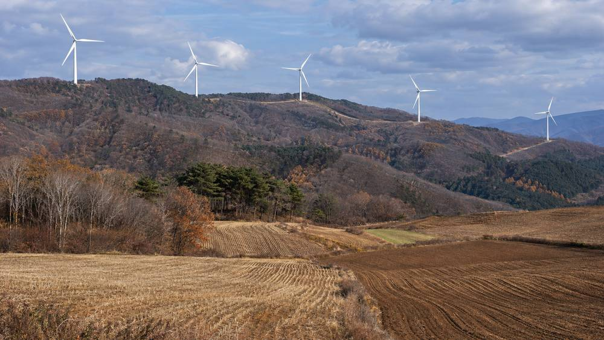
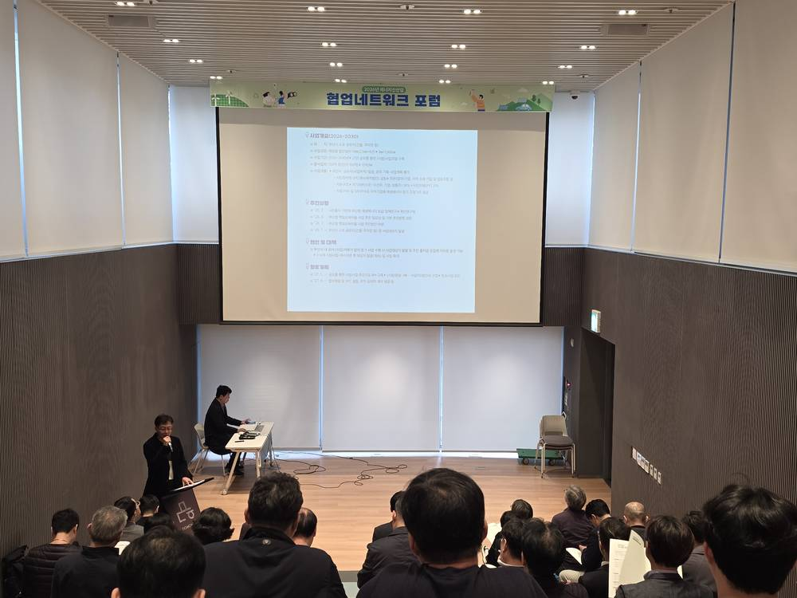
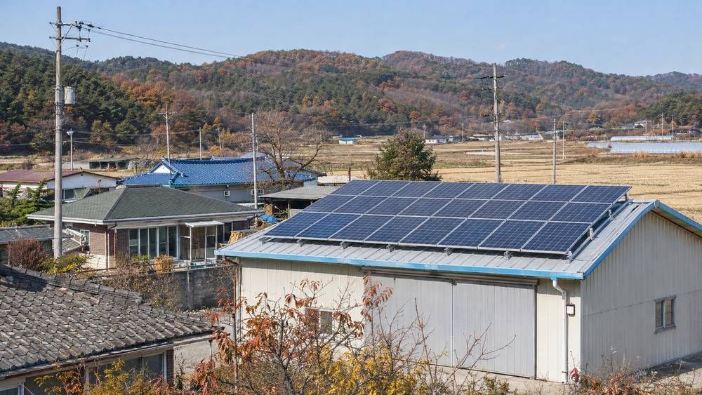
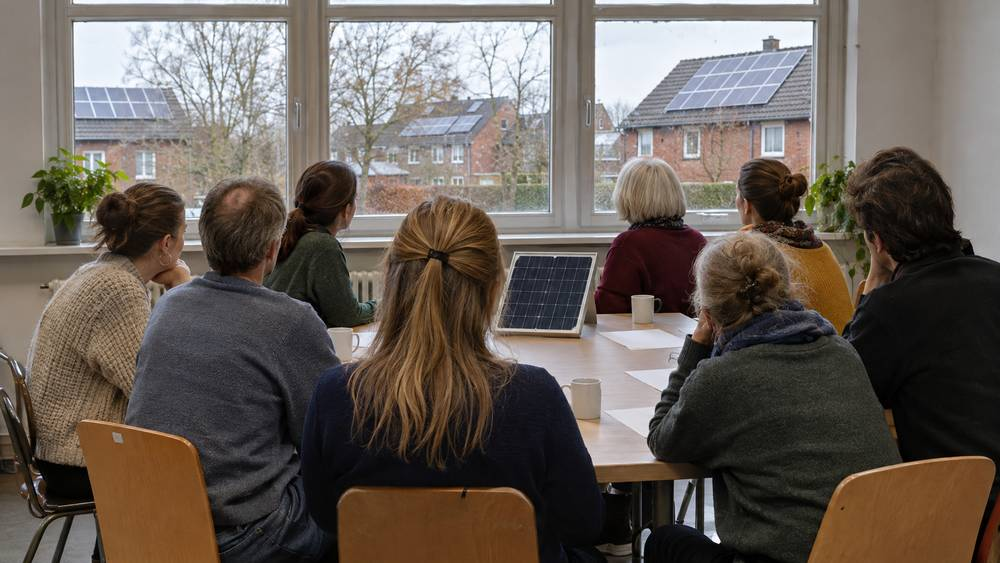
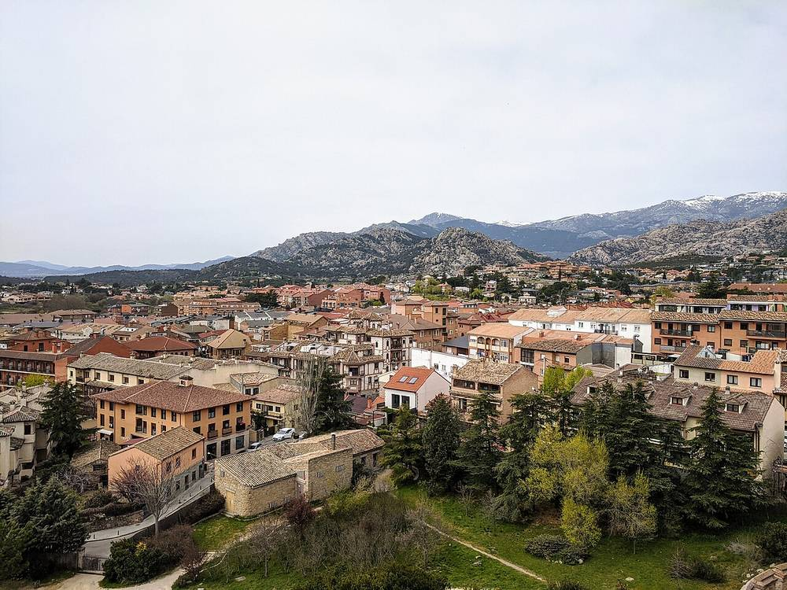
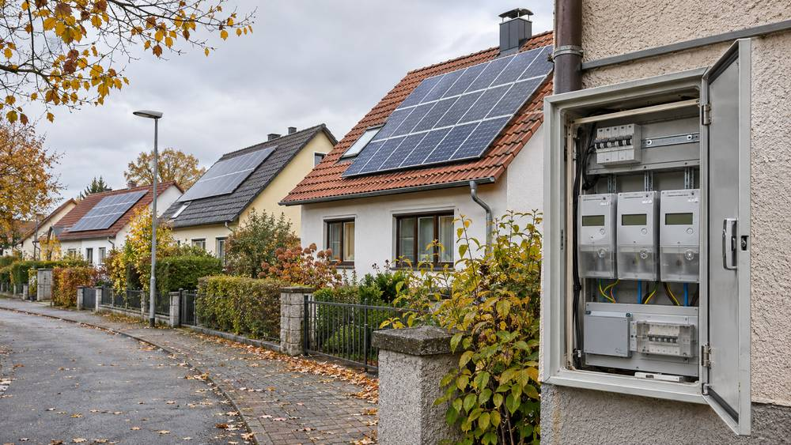

시민에너지·햇빛소득마을
전력망 막힌 햇빛소득마을 133곳에 저장장치, 국비 981억 원 커뮤니티솔라 공모 시작
에너지공단, 55개 배전선로에 ESS 지원…국비 40%·지방비 30%·민간 30% / 5개 권역마다 통합발전소 사업자 1곳, 12월 11일 마감

독일 림부르크 시의회, 고속도로변 21헥타르 태양광 승인…주민에 사업 15% 참여 기회 의무화
에너지공급사 EVL, 2027년 A3 고속도로변에 건설, 시민에너지협동조합 형태로 참여, 단지 들어설 지구에서는 반대 여론

강원 시군 '바람소득' 확산…태백 가덕산 도 배당 누적 119억 원, 고성은 주민 20% 지분
우상호 지사 1GW급 공공형 풍력…사업비 10% 주민 투자에 1만 1,667명 예상


[부산형 햇빛소득②] 기업 PPA로는 수익률 2%대…"부산시가 전기 사서 배출권 비용 아끼자"
부산연구원 "고정가격 상한 150원 아래, 주차장 태양광은 145원에 팔면 원금도 못 건져" / 부산시 배출권 구매비 7억 원대서 20억 원 넘게…시가 PPA 구매자 되면 IRR 5% 넘어 / 전력거래소 "직접 PPA 300kW 이상 고압 요건 완화 검토" / 자유토론서 "협동조합에 맡겨 달라"…선로 1.4km·부서 칸막이 지적

[부산형 햇빛소득①] 공공부지 10MW에 시민 45억…2027년 1월 시범 공모
부산시 17일 옛 시장 관사 도모헌서 에너지신산업 협업네트워크 포럼 / 2030년까지 2.5MW씩 4단계로 10MW, 사업비 150억 원 중 시민 30%·PF 70% / 부산테크노파크 "정부 햇빛소득마을 80% 조건부 선정…부지·판로·자금·신뢰 원스톱 지원"

고흥군, 세계태양광총회에 홍보관 열고 10GW 재생에너지 구상 공개
1GW 공공주도 영농형 태양광은 100MW 시범단지부터, 주민 건의 345kV 송전선로는 국가 전력망 계획 반영 추진


평창군, 방림·도사리·흥정 풍력 200MW 공공주도 개발 협약 18일 체결 예정
군 지분 배당과 초과 발전 이익으로 이익공유기금 조성 계획, 군민 1인당 환원액과 지급 시기는 미정

철원·화천 군의원, 접경지역 정책포럼서 영농형 태양광 군민펀드 제안
철원 농지 약 60% 외지인 소유 우려…화천은 군 유휴 추정부지 약 1,087만㎡ 활용 특례 확대 제안

남호주 아파트에도 공동 태양광·배터리, 설치비 절반 보조에 나머지는 무이자 융자
연방·주정부 1,780만 호주달러 투입, 건물 한 곳당 보조금·융자 각 최대 4만7,500 호주달러, 남호주 주민 12명 중 1명이 구분 소유 건물 거주

청주 농촌마을 17곳 햇빛소득마을 3차 공모 신청…태양광 16,082 kW·설치비 236억 4,200만 원
12월 16일 시행 법 개정으로 1 MW 이하 공익형 사업에 우선 접속권…행안부 최종 선정은 12월 말

경기 공공 RE100 설비 가동 중지 1,914일…소득마을 148곳 중 87곳은 3개 시군에
도의회 행정사무감사에서 지영일 의원이 발전량 중심 관리 요구, 경기 RE100 마을 올해 목표는 200개

미국 앤아버 시영 태양광·배터리 사업, 소득 기준 충족 가구로 확대…새로 20곳 가동 앞둬
브라이언트 동네 90여 가구에 설치한 뒤 다음 단계로, 시는 2027년 모든 시민·사업체에 개방할 계획

독일 이젠 주민 풍력 협동조합, 조합원 약 470명에 출자금 80만 유로 모았다
바이에른 산림공사가 7월 21일 풍력 2기 사업자로 선정…착공까지 몇 년 더 걸린다고 답변

이탈리아 사보나시, 지역 재생에너지 공동체 참여 절차 시작…시의회 표결 남아
시 집행위원회가 첫 단계 승인, 전기를 만들고 쓰는 회원으로 재단에 가입…공동체 이익은 에너지 빈곤 가구 지원에 무게

미네소타 전력협동조합 크로우윙파워, 11월 조합원에게 300만 달러 가까이 환급
2010년분 111만1,000달러에 그레이트리버에너지가 배정한 1992~1998년분 182만7,000달러, 현재 조합원은 전기요금에서 차감

래퍼해녹 부족, 옛 수도 터 교육시설 지붕에 12.32 kW 태양광…시공은 원주민 기업이 부족 비용 없이
패널 28장으로 2 MWh 가까이 발전…역량강화 보조금으로 신청부터 설치까지


캐나다 캘거리 전기·가스 판매사, 이익 전액을 지역 성소수자 단체에 돌린다
창업자는 급여 없이 5년 안에 10만 달러 이상 환원 목표, 2월에는 1,000달러 기금 전달

영국 북동부·요크셔 넷제로 허브, 주민 소유 지역에너지를 핵심 사업으로 꼽았다
정부 예산으로 움직이는 잉글랜드 5개 허브가 지역사회 에너지 사업의 상담과 기금 집행을 맡는다

스페인 산타폴라시, 학교·체육관 지붕 200kW 전기를 주민·상점 200곳과 나눈다
12월 20일까지 누리집 신청…발전 지점 5,000m 안이면 참여, 가입 무료

독일 에너지협동조합 프로콘, 아미바 운영 통신사로부터 6만3,300유로 출자 받아
지분 1,266좌를 사들인 통신사는 배당도 다시 지분에 넣기로 했고, 조합원은 4만2,000명을 넘는다

독일 생태경제연구소, 에너지협동조합 여성 참여 걸림돌 짚은 정책제안서 발간
쉬운 말·하이브리드 회의·활동 쉼 허용 권고, 브레멘 조합은 감사회 체험 프로그램 운영

수원 두 에너지협동조합, 11월 25일 율전동에 정원 만든다…도시숲 후원금 1,300만 원
11월 12~25일 조합원 주간 운영, 수원햇빛발전(주) 창립 설명회는 11월 16일 수원특례시의회에서 열기로 공지


이탈리아 발사모자 재생에너지 공동체, 주민 25가구 태양광·히트펌프 공동구매 추진
시민·소상공인 102명 협동조합, 태양광 200kW 넘게 설치, 자원봉사자 방문 홍보에 행사 4회 75명 참석

셰틀랜드 의회, 송전 막혀 버려지는 풍력 전기를 주민 요금에 쓰는 방안 조사 착수
가구 40%가 에너지빈곤인데 터빈 103기 풍력단지는 송전이 막히면 전기를 내보내지 못해…SSE·오프젬·GB에너지 참여, 빨라야 2028년 시범 운영 목표

독일 페를레베르크 두 마을, 주민 의견조사 뒤 개발사가 태양광 41헥타르 추진 접기로
10월 5일 조사에서 데르겐틴 참석 11명 중 8명 반대, 쥐코 35명 중 19명 반대·10명 찬성, 법적 구속력은 없어

화순 수동마을 1메가와트 햇빛소득마을, 저장장치로 전력망 잇는다…설치·운영비는 민간 사업자가 부담
49가구 주민 100% 동의…기후에너지환경부 김성환 장관 11월 11일 현장 점검, 저장장치 사업자 공모는 그 주 안에 낸다

제주에너지공사 풍력 59.53MW 운영, 나주는 공공부지 5곳에 1.6MW 햇빛연금 추진
한림해상풍력 주민 1,009명 300억 원 투자…한국은행 제주본부, 2038년 출력제한율 11.0% 전망

남원 9개 마을 햇빛소득마을 사업화 과제 5가지, 시의회 연구단체가 점검
행안부 2차 공모 436곳 선정, 즉시 추진 23곳·조건부 413곳…남원 9개 마을은 모두 ESS 계통연계가 조건

미국 조지아주 코스털 일렉트릭 협동조합, 2011~2013년 전기 쓴 조합원에게 153만4,289.65달러 환원
50달러 이상은 12월 초 수표로, 50달러 미만은 11월부터 전기요금에서 차감…지금까지 2,300만 달러 넘게 돌려줘

유럽연합, 에너지공동체 10곳에 거버넌스 혁신상 상금 100만 유로
스페인 만사 에네르히아 35만 유로, 오스트리아 로빈 파워후드 20만 유로, 포르투갈 비베르 텔헤이라스 10만 유로

크랄링어폴더르 열 협동조합, 델플란트 지열 사업과 열 공급 계약 서명
열 출력 25 MWth 규모, 첫 시추는 2028년 중반·첫 열 공급은 2029년 4분기 목표

스코틀랜드 송전 사업자, 로크신 남쪽 주민에게 162만 파운드 기금 설계 묻는다
레어그·로가트 설문 12월 14일까지, 설명회 3회…'사우스 로크신 지역기금'은 2027년 문 열 예정

셰틀랜드 주민 에너지 단체, 스코틀랜드 정부에 지역에너지 지원금 다년 배정 요구
구들래드 공공재정 장관에게 서한…CARES 회복력기금은 2027년 3월 17일까지 써야

독일 협동조합 등 연합, 이웃 간 전기 나눔 개선안 11가지 제시…기한 넘긴 배전망 회사에 정액 보상 제안
에너지경제법 제42c조로 2026년 6월부터 허용됐지만 처리 절차·계량기·비용 문제가 남아, 연합은 단기 6개·중기 3개·장기 2개 과제로 나눠 제안

햇빛소득마을 1·2차 선정 522곳 중 490곳이 조건부, 국회 예산 심사에서 실효성 쟁점으로
행안부 발표 기준 조건부는 1차 77곳·2차 413곳, 임호선 의원은 내년 2,200곳 확대 계획에 예산은 이차보전 285억 원 중심이라고 지적

용인시정연구원, 반도체 도시의 재생에너지 수익을 시민과 나누는 5가지 방안 제시
공영주차장 51곳 중 17곳이 태양광 설치계획 제출…시민 출자 배당·주민 일자리·정책금융 연계 담아


市民エネルギー·太陽光所得村
送電網に接続できない「日差し所得村」133か所に蓄電池、国費981億ウォンのコミュニティソーラー公募始まる
エネルギー公団、55の配電線にESS支援…国費40%・地方費30%・民間30% / 5圏域ごとに統合発電所事業者1社、12月11日締め切り
ドイツ・リンブルク市議会、高速道路沿い21ヘクタールの太陽光を承認…住民に事業の15%の参加機会を義務化
エネルギー供給会社EVL、2027年にA3高速道路沿いで建設、市民エネルギー協同組合の形で参加、団地が建つ地区では反対世論
江原の市・郡に「風力所得」広がる…太白・加徳山の道配当は累計119億ウォン、高城は住民20%出資
禹相虎知事が1GW級の公共型風力…事業費の10%を住民が投資、1万1,667人参加を見込む
【釜山型太陽光所得②】企業PPAでは収益率2%台…「釜山市が電気を買い、排出権費用を節約」
釜山研究院「固定価格の上限150ウォン未満、駐車場の太陽光は145ウォンで売れば元本も回収できない」 / 釜山市の排出権購入費は7億ウォン台から20億ウォン超に…市がPPA購入者になれば内部収益率5%超 / 電力取引所「直接PPAの300kW以上高圧要件の緩和を検討」 / 自由討論で「協同組合に任せて」…送電線1.4km・部署の縦割りを指摘
【釜山型太陽光所得①】公共用地10MWに市民45億ウォン…2027年1月に試験公募
釜山市が17日、旧市長公館トモホン（道母軒）でエネルギー新産業協業ネットワークフォーラム / 2030年まで2.5MWずつ4段階で10MW、事業費150億ウォンのうち市民30%・PF 70% / 釜山テクノパーク「政府の太陽光所得村は80%が条件付き選定…用地・販路・資金・信頼をワンストップで支援」
高興郡、世界太陽光発電会議に広報館を設け10GW再生可能エネルギー構想を公開
公共主導の営農型太陽光1GWは100MWの実証団地から、住民提案の345kV送電線は国家電力網計画への反映を推進
南オーストラリアの集合住宅にも共同の太陽光・蓄電池、設置費の半分を補助し残りは無利子融資
連邦・州政府が1,780万豪ドルを投入、1棟あたり補助金・融資とも最大4万7,500豪ドル、南オーストラリアは住民12人に1人が区分所有の建物に居住
清州の農村17村が「日差し所得村」第3次公募に申請…太陽光16,082 kW・設置費236億4,200万ウォン
12月16日施行の法改正で1 MW以下の公益型事業に優先接続権…行政安全部の最終選定は12月末
京畿道の公共RE100設備、稼働停止1,914日…所得村148か所のうち87か所は3市郡に
道議会行政監査で池英一議員が発電量中心の管理を要求、京畿RE100村の今年の目標は200か所
米アナーバー市営の太陽光・蓄電池事業、所得基準を満たす世帯へ拡大…新たに20カ所が稼働間近
ブライアント地区の90余世帯への設置を経て次の段階へ、市は2027年にすべての市民・事業者へ開放する計画
イタリア・サヴォーナ市、地域再生可能エネルギー共同体への参加手続きを開始…市議会の採決を残す
市執行委員会が第一段階を承認、電力をつくって使う会員として財団に加入…共同体の収益はエネルギー貧困世帯の支援に重点
米ミネソタの電力協同組合クロウ・ウィング・パワー、11月に組合員へ300万ドル近くを還元
2010年分111万1,000ドルに、グレートリバー・エナジーが割り当てた1992～1998年分182万7,000ドル、現在の組合員は電気料金から差し引き
米ラッパハノック族、旧首都跡の教育施設の屋根に12.32 kWの太陽光…施工は先住民企業が部族の負担なしで
パネル28枚で2 MWh近くを発電…能力構築助成で申請から設置まで
英国北東部・ヨークシャーのネットゼロ・ハブ、住民所有の地域エネルギーを中核事業に挙げる
政府予算で動くイングランドの5ハブが、地域コミュニティのエネルギー事業の相談と基金の執行を担う
スペイン・サンタポラ市、学校・体育館の屋根200kWの電気を住民・商店200カ所と分かち合う
12月20日までウェブサイトで申請…発電地点から5,000m以内なら参加可、加入無料
ドイツのエネルギー協同組合プロコン、アミバ運営の通信会社から6万3,300ユーロの出資
持分1,266口を取得した通信会社は配当も再び持分に入れる方針で、組合員は4万2,000人を超える
ドイツ生態経済研究所、エネルギー協同組合への女性参加の壁を指摘する政策提言書を発行
分かりやすい言葉・ハイブリッド会議・活動の休止容認を勧告、ブレーメンの組合は監査役会体験プログラムを運営
水原の2つのエネルギー協同組合、11月25日に栗田洞で庭園づくり…都市林への寄付金1,300万ウォン
11月12～25日に組合員週間、水原ひなた発電（株）の設立説明会は11月16日に水原特別市議会で開催と告知
イタリア・ヴァルサモッジャの再エネ共同体、住民25世帯で太陽光・ヒートポンプを共同購入へ
市民・小規模事業者102人の協同組合、太陽光200kW超を設置、ボランティアの戸別訪問などで説明会4回に75人
シェトランド議会、送電が詰まり捨てられる風力の電気を住民の料金に生かす方策の調査に着手
世帯の40%がエネルギー貧困なのに、103基のタービンを持つ風力発電所は送電が詰まると電気を送り出せず…SSE・Ofgem・GBエナジーが参加、早くて2028年の試行運用が目標
ドイツ・ペルレベルクの2村、住民意見調査の後に開発会社が太陽光41ヘクタールの推進を取りやめへ
10月5日の調査でデルゲンティンは出席11人中8人が反対、ジューコウは35人中19人が反対・10人が賛成、法的拘束力はなし
和順・水洞村の1メガワット太陽光所得村、蓄電装置で送電網へ接続…設置・運営費は民間事業者が負担
49世帯の住民100%が同意…気候エネルギー環境部の金星煥長官が11月11日に現地点検、蓄電装置事業者の公募はその週内に実施
済州エネルギー公社は風力59.53MWを運営、羅州は公共用地5カ所で1.6MWの太陽光年金を推進
翰林洋上風力に住民1,009人が300億ウォン投資…韓国銀行済州本部、2038年の出力抑制率11.0%を予測
米ジョージア州のコースタル・エレクトリック協同組合、2011〜2013年に電気を使った組合員へ153万4,289.65ドルを還元
50ドル以上は12月初めに小切手、50ドル未満は11月から電気料金から差し引き…これまでに2,300万ドル超を返還
EU、エネルギー共同体10団体にガバナンス革新賞、賞金100万ユーロ
スペインのマンサ・エネルヒアに35万ユーロ、オーストリアのロビン・パワーフッドに20万ユーロ、ポルトガルのビベル・テリェイラスに10万ユーロ
スコットランドの送電事業者、ロッホ・シン南の住民に162万ポンドの基金設計を問う
レアーグ・ロガートのアンケートは12月14日まで、説明会3回…「サウス・ロッホ・シン地域基金」は2027年開始予定
シェトランドの住民エネルギー団体、スコットランド政府に地域エネルギー支援金の複数年配分を要求
グッドラッド公共財政担当大臣に書簡…CARESレジリエンス基金は2027年3月17日までに使う必要
ドイツの協同組合などの連合、隣近所での電気の分け合いを改める11の案を提示…期限を過ぎた配電会社に定額の補償を提案
エネルギー経済法第42c条で2026年6月から認められたが、処理手続き・計量器・コストの課題が残り、連合は短期6件・中期3件・長期2件に分けて提案
日差し所得村、第1・2次選定522カ所のうち490カ所が条件付き、国会の予算審査で実効性が争点に
行政安全部の発表では条件付きは第1次77カ所・第2次413カ所、林好善議員は来年2,200カ所への拡大計画に予算は利子補給285億ウォン中心と指摘
市民能源·阳光收入村
133个电网受阻的"阳光收益村"将配储能，国费981亿韩元社区光伏项目开始招标
能源公团为55条配电线路支持ESS…国费40%、地方费30%、民间30% / 5个圈域各选1家虚拟电厂运营商，12月11日截止
德国林堡市议会批准高速公路旁21公顷光伏电站…强制要求向居民提供项目15%的参与机会
能源供应商EVL将于2027年在A3高速公路旁建设，以市民能源合作社形式参与，电站所在地区仍有反对声音
【釜山型阳光收入②】仅靠企业PPA收益率2%左右…"由釜山市购电，节省排放权费用"
釜山研究院："固定价格上限低于150韩元，停车场光伏以145韩元出售连本金都收不回" / 釜山市排放权购买费从7亿增至20亿韩元以上…市政府成为PPA买方则内部收益率超过5% / 电力交易所："研究放宽直接PPA的300kW以上高压条件" / 自由讨论："交给合作社吧"…指出1.4公里线路缺口与部门壁垒
【釜山型阳光收入①】公共用地10MW，市民出资45亿韩元…2027年1月启动试点招募
釜山市17日在原市长官邸道母轩举办能源新产业协作网络论坛 / 2030年前分4期、每期2.5MW共10MW，150亿韩元项目费中市民30%、项目融资70% / 釜山科技园："政府阳光收入村80%为有条件入选…将一站式支持场地、销路、资金和信任"
南澳公寓也能装共享光伏和电池，补贴一半安装费，其余提供无息贷款
联邦与州政府投入1,780万澳元，每处物业补贴与贷款各最高4万7,500澳元，南澳每12名居民中有1人住在分层产权建筑
清州17个农村申请“阳光收入村”第三轮公募…太阳能16,082 kW·安装费236亿4,200万韩元
12月16日施行的修法让1 MW以下公益型项目获优先并网权…行政安全部最终遴选定于12月底
设得兰议会着手调查如何把因输电受阻而被弃用的风电用于居民电费
40%家庭陷入能源贫困，拥有103台风机的风电场在输电受阻时无法送出电力…SSE、Ofgem、GB能源参与，目标最早2028年开展试点运行
美国佐治亚州Coastal Electric合作社向2011~2013年用电的社员返还153万4,289.65美元
50美元以上12月初以支票发放，50美元以下自11月起从电费中扣减…迄今已返还超过2,300万美元
德国合作社等组成的联盟提出11项改进邻里电力共享的建议…建议对超期的配电公司实行定额赔偿
《能源经济法》第42c条自2026年6月起允许共享，但处理流程、电表和成本问题仍在，联盟将建议分为短期6项、中期3项、长期2项
阳光收入村第一、二轮入选522处中490处为附条件，国会预算审议聚焦实效
据行政安全部公布，附条件入选第一轮77处、第二轮413处；林好善议员指出，明年计划扩大至2,200处，预算却以285亿韩元贴息为主
Citizen Energy·Sunlight Income Village
Storage for 133 grid-blocked solar income villages as 98.1 billion won community solar call opens
Korea Energy Agency backs ESS on 55 distribution lines, split 40% national, 30% local, 30% private / One VPP operator per region across five regions; applications close Dec. 11
Germany's Limburg council approves 21-hectare solar park beside the highway and requires 15% of the project be open to residents
Utility EVL to build beside the A3 in 2027, with citizen energy cooperative participation; opposition remains in the district where the park will stand
Gangwon Localities Spread "Wind Income": Taebaek Gadeoksan Dividends Reach 11.9 Billion Won for the Province, Goseong Eyes 20% Resident Stake
Gov. Woo Sang-ho unveils 1GW public wind plan, expects 11,667 residents to invest 10% of project costs
Jecheon Cooperative and Geonju Sign MOU on "Sunlight Income Village" Projects, Specific Projects Still Undecided
The agreement sets only a basic direction for cooperation / Separate from village selection, construction rights and revenue
[Busan Sunlight Income ②] Corporate PPAs yield about 2%; researchers propose the city buy the power and save on emission allowances
Busan Development Institute: fixed-price cap below 150 won, parking-lot solar sold at 145 won cannot recover its principal / Busan City's allowance purchases rise from 700 million won to over 2 billion won; with the city as PPA buyer, IRR tops 5% / KPX: easing the 300kW high-voltage requirement for direct PPAs is under review / Open discussion: "Leave it to cooperatives"; 1.4km grid gap and departmental silos raised
[Busan Sunlight Income ①] 10MW on public land with 4.5 billion won from citizens; pilot call opens January 2027
Busan City holds Energy New Industry Collaboration Network Forum at Domoheon, the former mayor's residence, on Nov. 17 / 10MW in four 2.5MW stages through 2030, 30% of the 15 billion won from citizens and 70% project finance / Busan Techno Park: "80% of government Sunlight Income Villages were selected only conditionally; one-stop support for sites, buyers, financing and trust"
Goheung County Opens Booth at World Solar Conference and Presents 10 GW Renewable Energy Plan
1 GW public-led agrivoltaics to start with a 100 MW pilot site; county seeks national grid plan listing for resident-proposed 345 kV line
Goseong's Jangsin 1-ri sunlight income village to finish in December, with expected income of 81.29 million won a year
Second village Hwagok-ri is a 993.3kW, 1.65 billion won project; selection decision due in December
Pyeongchang to sign deal on 200MW of publicly led wind at Bangnim, Dosa-ri and Heungjeong on Nov. 18
County plans a benefit-sharing fund from its dividends and excess generation profits; per-resident payout and timing not yet set
Cheorwon and Hwacheon county councillors propose an agrivoltaic residents' fund at border-region policy forum
Concern that about 60% of Cheorwon farmland is owned by outsiders; Hwacheon councillor proposes wider use of about 10.87 million sq. m of presumed idle military land
Shared solar and batteries reach South Australian apartments, with half the cost in grants and the rest in zero-interest loans
Federal and state governments commit A$17.8 million; grants and loans are each capped at A$47,500 per building; one in 12 South Australians lives in strata
17 Cheongju rural villages apply in third Sunlight Income Village round: 16,082 kW of solar, 23.642 billion won in installation costs
Law change taking effect December 16 gives public-interest projects of 1 MW or less priority grid access; final selection due late December
Gyeonggi public RE100 plants idle 1,914 days; 87 of 148 income villages sit in three counties
Councillor Ji Young-il urges output-based management at audit; Gyeonggi RE100 village target this year is 200
Ann Arbor's city-run solar-and-battery utility widens to income-eligible households, with 20 more sites about to go live
After equipping more than 90 Bryant-area homes, the SEU moves to its next phase; the city plans to open it to all residents and businesses in 2027
Isen residents' wind cooperative in Germany reaches about 470 members and €800,000 in capital
Bavarian State Forests picked a cooperative for two turbines on July 21; construction is still years away, managing director says
Italy's Savona starts process to join regional renewable energy community, council vote pending
City executive approves first step; city to join foundation as a member that both produces and uses power; community income geared to households in energy poverty
Minnesota electric co-op Crow Wing Power returns almost $3 million to members in November
$1.111 million in 2010 credits plus $1.827 million assigned for 1992-1998 by Great River Energy; current members get it as a bill credit
Rappahannock Tribe puts 12.32 kW of rooftop solar on education lodge at its old capital site, built by Native-owned firm at no cost to the tribe
28 panels have produced nearly 2 MWh; capacity-building grant covered work from application to installation
South Jeolla-Gwangju council asks Green Energy Institute to support sunlight income villages after completion
Committee chair Park Won-jong made the request at an audit; the institute said it is introducing an AI-based accounting system
Calgary power and gas retailer puts all of its profits toward local LGBTQ+ groups
Founder takes no salary and aims to give back $100,000 or more within five years; a $1,000 fund cheque went out in February
North East & Yorkshire Net Zero Hub names community-owned energy a core activity
Government-funded hubs in England, five in all, handle advice and fund delivery for community energy projects
Spain's Santa Pola to share 200kW from school and sports hall roofs with 200 homes and shops
Applications on the town website until December 20…open to anyone within 5,000m of the panels, free to join
German energy co-op Prokon takes €63,300 stake from telecom firm behind Amiva
The company bought 1,266 shares and will reinvest dividends; Prokon has more than 42,000 members
German ecological economics institute issues policy paper on barriers to women in energy cooperatives
Recommends plain language, hybrid meetings and allowing breaks from volunteering; Bremen cooperative runs a supervisory board trial programme
Two Suwon energy cooperatives to build a garden in Yuljeon-dong on Nov. 25, with KRW 13 million for urban forest
Members' fortnight runs Nov. 12–25; briefing on Suwon Haetbit Power Co. announced for Nov. 16 at Suwon City Council
19 Gangwon Villages Apply in Third Round of Sunlight Income Village Program; Ministry to Name Final Picks in Late December
Gangwon already has 46 villages selected in the first two rounds; third-round applications closed October 30
Italy's Valsamoggia Energy Community Moves Ahead With Group Purchase of Solar and Heat Pumps for 25 Households
Cooperative of 102 residents and small businesses has installed more than 200kW of solar; volunteer outreach and four events drew 75 people
Shetland Council Begins Study of Using Wind Power Lost to Grid Bottlenecks to Cut Residents' Bills
40% of households are in fuel poverty, yet the 103-turbine wind farm cannot export when the grid is congested; SSE, Ofgem and GB Energy join, with trials targeted for 2028 at the earliest
Two Villages Near Perleberg, Germany: Developer Drops 41-Hectare Solar Plan After Residents' Poll
At the 5 October poll, 8 of 11 present in Dergenthin opposed; in Sükow, 19 of 35 opposed and 10 supported. The result is not legally binding
Hwasun's Sudong village plans to link its 1-megawatt Sunlight Income Village project to the grid with battery storage, with a private operator paying installation and running costs
All 49 households consented (100%); Climate Minister Kim Sung-whan inspected the site on Nov. 11, and the storage operator tender is due that same week
Jeju Energy Corporation Runs 59.53MW of Wind as Naju Plans a 1.6MW 'Sunlight Pension' on Five Public Sites
1,009 residents invested ₩30 billion in Hallim offshore wind…Bank of Korea Jeju office projects 11.0% curtailment in 2038
Council Study Group Reviews Five Tasks for Turning Nine Namwon Sunlight Income Villages into Projects
Interior Ministry's second round picked 436 villages, 23 ready now and 413 conditional; all nine in Namwon must connect to the grid through ESS
Georgia's Coastal Electric Cooperative to Return $1,534,289.65 to Members Who Used Power in 2011–2013
Checks of $50 or more go out in early December; smaller amounts are deducted from bills starting in November…more than $23 million returned so far
EU Awards Governance Innovation Prize to 10 Energy Communities, With €1 Million in Prize Money
Spain's Manza Energía receives €350,000, Austria's Robin Powerhood €200,000 and Portugal's Viver Telheiras €100,000
Kralingerpolder Heat Cooperative Signs Heat Supply Contract With Delfland Geothermal Project
A 25 MWth source, with the first well planned for mid-2028 and first heat targeted for the fourth quarter of 2029
Scottish Transmission Operator Asks Residents South of Loch Shin to Help Design a 1.62 Million Pound Fund
Lairg and Rogart survey open to December 14, three sessions; South Loch Shin Local Fund due to open in 2027
Shetland Community Energy Groups Ask Scottish Government to Award Local Energy Grants Over Several Years
Letter to Public Finance Minister Goodlad; CARES Resilience Fund money must be spent by 17 March 2027
Germany's Energy Sharing Alliance of cooperatives and others sets out 11 proposals to fix neighbour-to-neighbour power sharing, including flat compensation when grid operators miss deadlines
Allowed since June 2026 under Section 42c of the Energy Industry Act, sharing is still held back by processing, metering and cost problems; the alliance splits its proposals into 6 short-term, 3 medium-term and 2 long-term
490 of 522 Sunlight Income Villages Selected in Rounds One and Two Are Conditional, and Their Effectiveness Became an Issue in the National Assembly Budget Review
The Ministry of the Interior and Safety counts 77 conditional villages in round one and 413 in round two; Rep. Lim Ho-seon noted the plan to expand to 2,200 villages next year rests mainly on 28.5 billion won in interest subsidies
Yongin Research Institute Sets Out Five Ways to Share Renewable Profits From a Chip City With Citizens
17 of 51 public car parks have submitted solar plans; proposals cover citizen-investment dividends, local jobs and policy finance
Shinhyup to Lend Up to 85% of Sunlight Income Village Solar Costs and Joins Gochang Offshore Wind Loan
Interest subsidy for agency-recommended villages; 100 billion won syndicated loan agreed for Gochang offshore wind on August 6